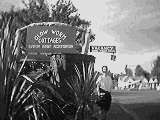
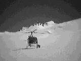

Day 11 — Wednesday 10 Jan
An early start was necessary this morning as we were booked on the 8am Lynx to picton. The alarm went off and we got ourselves up and moving and left the motel at 6.45am. Someone had parked very closely behind us and so we had to negotiate our way out.
We drove out of town and, after a minor wrong turning (or scenic alternative route if you were to believe Rich), we joined the queues for vehicle check in and boarding for the Lynx.
Once we were aboard we got some breakfast and then settled down for the 2 hour 15 min crossing. We passed some beautiful scenery on the way and arrived on time.
We got off the sea cat and went South aiming to get to Franz Josef by the end of the day.
On our long (over 500km) trip we firstly went through wine country and very dry land. We did a driver change at St Arnoud. In the next stretch we spotted a swingbridge in a creek which made a really pleasant view. We continued on until Reefton where we stopped for lunch at Cee Cee's Cafe on broadway. The portions were huge and helped us to keep going. Reefton's claim to fame is that it had its own electricity supply and street lighting in 1888, beating all other towns in New Zealand. We headed off again, and had a quick stop at Greymouth to call our accommodation for the evening (which we'd booked on Monday) to let them know what time we'd arrive. Then off on the road again. During our trip we crossed many single lane traffic bridges and two which were single lane road traffic and train as well. We stopped again at Hokitika to fill up with petrol. Hoki was the first place in New Zealand to have a scheduled air service. Our final stage took us along some beautiful scenery, with the mountains of the Southern Alps in front of us, and at times the Tasman Sea to the right of us.
We took a slight detour to Okarito, which was marked on the road atlas as having a panoramic view of the Southern Alps. This turned out to be a 1.5 hour walk which, as usual, we didn't have the time to do. There were some good views to be had anyhow.
We arrived at Franz Josef and found the Glow Worm Cottages fairly easily: Franz Josef only has 2 streets to choose from. We checked in and got our stuff into the room which is really nice. On the walls are photos of people on the Franz Josef glacier in the early part of the 20th century, with the ladies in full dresses with parasols/umbrellas. We took a walk into town to get some food from the grocery shop, and to find The Helicopter Line to check instructions for tomorrow's flight.
We headed back to our room and cooked ourselves a very pleasant dinner of lamb and salad, all washed down with red wine.

Rich outside the Glow worm cottages
Day 12 — Thursday 11 Jan
We had a lazy morning, and a quick breakfast before we wandered to The Helicopter Line to check in for our Mountain Scenic Spectacular trip. The flight had been delayed a bit so we hung around the office for a while until we were given our safety briefing.
We were taken close to the riverbed from where we boarded our helicopter — Rich and I were in the front. This was the first time I'd been in a helicopter and so I was a little apprehensive at first but the scenery soon put a stop to that. We firstly flew over the fox glacier, and then up to Mount Cook which was absolutely spectacular. Flying this close to mountains gives a really interesting and different perspective on them. We were lucky as the mountain stood out boldly against a blue sky. We continued over Mount Tasman and the Tasman glacier before heading on to Franz Josef glacier. We landed on the snowfields at the top of it, and took loads and loads of photos. The white of the snow looked fantastic against the still blue sky. It was really clear and surprisingly warm. Just before we headed back into the helicopter, we watched some low cloud move down over the glacier. We got back into the helicopter and flew over the glacier back into Franz Josef. It was a fantastic experience. Next time we think we'll try the heli-hiking option — a helicopter flight up the glacier, then a landing and a 2 hour guided hike amongst glacial ice formations before a helicopter flight back to the village.
After landing, we were both hungry and so we went to a place called Beeches on the main strip for a quick lunch which was very pleasant and much needed.
For our helicopter flight we'd both worn trousers expecting it to be cold, but it wasn't at all. Having come back down we were now both far too warm and so headed back to get changed into our shorts.
We got into the car and headed off to Fox Glacier and followed the access road, past the signs on the road stating "In 1750 the glacier was here", and parked at the end. The first part of the walk is shared with the glacier view walk and there are lots of information boards around, about how a glacier moves, and how the Fox glacier has retreated over the last few centuries. We continued to walk towards the terminal face, across streams and rocks. At the terminal face there are yellow ropes beyond which you can only go with a tour guide. Looking up at the glacier was spectacular, and looking into the ice cave was interesting as we could see water dripping into the river below.
We walked back to the car and drove back along Highway 6 to the access road for the Franz Josef Glacier. Again we walked to the terminal face, across streams and rocks. There was less of a formal walkway here as the river had changed its flow. There were some beautiful waterfalls along the way, but it's much the same as Fox. Franz Josef seems larger, but dirtier — some of the rocks on the top of it were pretty large, I guess that's the power of a glacier. The rate of descent is amazing — at times descending up to 5 metres per day. Generally, though, it moves at about 70cm per day now.
After our walk we headed back to the Glow worm cottages for a bit of domesticity — Rich washed some clothes whilst I did some research into our next stop — Queenstown. There was a spa at the Glow worm so we thought we'd give it a go. Unfortunately it was cold water and so was refreshing rather than relaxing.
We walked back into the town and called to book some accommodation in Queenstown for the next day and Saturday. We also called Millford Sound Fly & Cruise to get some details about their trips as we still hadn't worked out how to get to Milford Sounds — the coach and cruise option seems to take about 12 hours, and as we only have one full day in Queenstown this seems like too much time. (Time seems to be the thing we've been most short of so far.)
Our next stop was one of the tourist shops to get a few souvenirs. We seemed to do pretty well at this, loads of kiwis — magnets with kiwis on, fluffy kiwis, kiwi badges, wind-up kiwis, wooden kiwis... Then it was dinner time and we ended up in Beeches again, and again it was pleasant.

The helicopter at the top of the glacier
Move on to in and around Queenstown or go back to the contents page
Comment on the Wellington to Franz Josef section